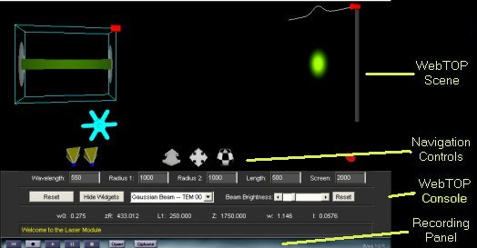

Lasers: Directions
Under normal operation, your WebTOP window should look like the following:

The WebTOP window has four parts. The top portion is the active WebTOP scene.
The second portion is the VRML Navigation controls.
The third portion, the console, contains a message line that provides help on the operation of the Widgets and keyboard entry boxes.
The fourth portion is the recording panel that allows you to record and replay WebTOP sessions. You may scroll down to read on, or
select the appropriate link from the following items:
How To Change Parameters
When you start the module, you should see a figure similar to this:
The parameters that you can change are the wavelength,
Radius 1 - the radius of the first mirror, Radius 2 - the radius of the second mirror,
the length of the cavity, the position of the
screen, and the transverse mode. These parameters can be changed
by manipulating
the provided widgets and by using the WebTOP
console. The console also allows you to hide/show the widgets.
Module Widgets:
This module includes two types of widgets, a wheel and a dragger:
|
|
| Wheel Widgets |
Dragger Widget |
To change a parameter, you need to position your cursor over the proper
widget. Labels on the widget figures, shown above, identify each of the widgets. Once you have placed the cursor over the widget, the cursor changes shape.
If you click on the left mouse button, a message explaining the operation
of the widget appears at the help portion of the module console.
Changing the Wavelength:
Once you select the wheel, drag and rotate the cursor to the left if you want to decrease the wavelength or the right if you want to increase it. You may need to repeat dragging in the same direction until you obtain the desired wavelength. The new value of the wavelength is then displayed in the corresponding input box.
Changing the Screen Position:
Once you select the corresponding dragger widget, drag the cursor towards the position you want to move the screen to. The modules help provides messages when the selected values are not allowed.
Changing the Length of the Cavity:
Once you select the corresponding dragger widget, drag the cursor towards the position you want to move the front end of the cavity to. The modules help provides messages when the selected values are not allowed.
Using the WebTOP Console:
You may use the WebTOP console to change source parameters and to control the scene. You may change the parameters by typing the values in the "Input Boxes". You need to press the enter key after you change each of the parameters.
You may select the Transverse Mode by using the corresponding menu. You can change the brightness of the beam by using the corresponding slider control.
|